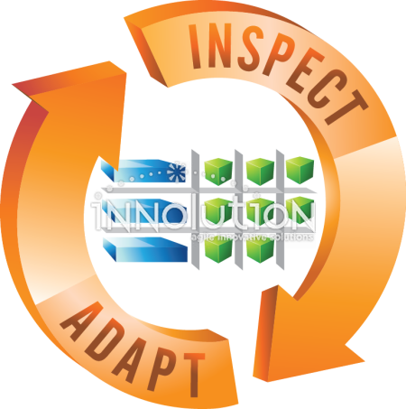

The Daily Scrum is a short, time-boxed meeting held at the same time and place every day of a Sprint, usually lasting no more than 10 to 15 minutes. Its objective is to inspect the team's progress toward the Sprint goal and adjust the plan for the next 24 hours. Team members share what they did since the last meeting, what they plan to do next, and anything blocking them. For example, a developer might say, "Yesterday I finished the menu links, today I will test them, and I need the final page names from Sam to continue."
The Developers (the people doing the work) participate and own the meeting. The Scrum Master makes sure it happens and stays within the time limit, and helps remove any obstacles that come up. The Product Owner does not normally attend, though the team can ask them for clarification afterward. Because the meeting is held standing or in a quick online check-in, it keeps everyone aligned without long discussions, and teammates quickly see who needs help

The Daily Scrum is not a status report to a manager, where each person justifies their time. It is also not a problem-solving session: if a bug needs a long discussion, the people involved meet right after the Daily Scrum instead of holding up the whole team. It is not a place for blame, a long planning meeting, or a replacement for talking during the day. For example, if two developers spend ten minutes debating a database design, that discussion should move to a separate conversation, and the Daily Scrum should return to quick updates and offers of help.